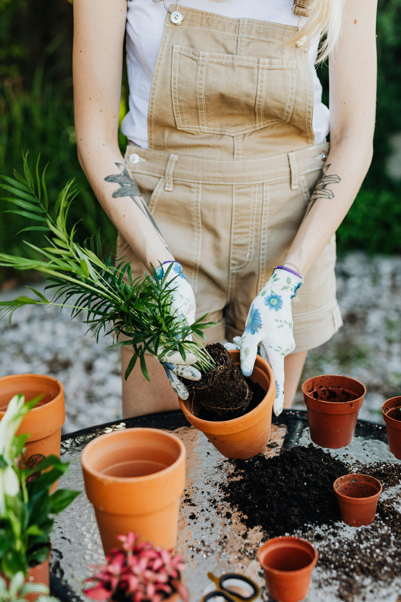
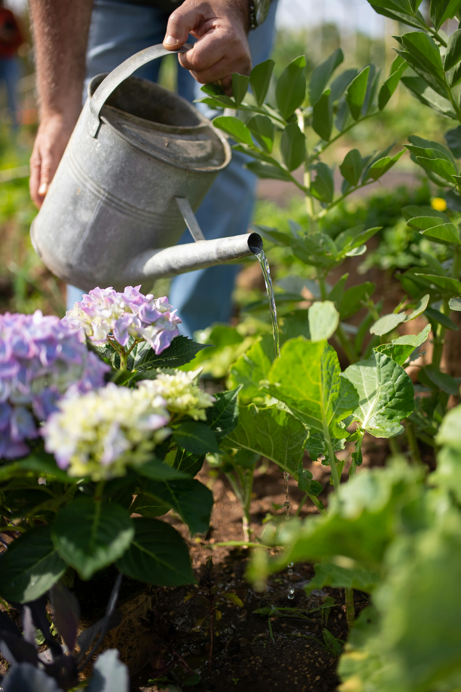

Dicas &
Cuidados
Em destaque
Guia Completo para um Jardim Sofisticado

Transformar um ambiente comum em um espaço verde e elegante é mais do que simplesmente colocar plantas aleatórias. Um jardim sofisticado requer planejamento, conhecimento das espécies e uma composição visual pensada nos mínimos detalhes.
Escolha das plantas
Opte por espécies que se complementem em alturas, texturas e cores. Samambaias, orquídeas e philodendrons são excelentes para ambientes internos.
Composição visual
Agrupe plantas em números ímpares e misture vasos de diferentes materiais — cerâmica, vidro, vime — para criar profundidade.
Manutenção consistente
Cada planta tem necessidades específicas. Invista tempo em entender a rega ideal, luminosidade e adubação de cada espécie.
Rega ideal para cada tipo de planta
Um dos erros mais comuns de quem cuida de plantas é acertar a frequência da rega. Cada espécie tem necessidades diferentes e entender isso é fundamental para o cultivo saudável.
Suculentas e Cactos
Regue apenas quando o solo estiver completamente seco. Em média, 1 vez por semana no verão e 1 vez por mês no inverno.
Plantas Tropicais
Mantenha o solo levemente úmido, não encharcado. Regue 2 a 3 vezes por semana no verão, reduzindo no inverno.
Samambaias
Apreciam solo constantemente úmido. Se as bordas das folhas ficarem douradas, é sinal de que precisam de mais água.

A importância da luz certa
A luz é o combustível das plantas. Cada espécie evoluiu em condições específicas de luminosidade e recriar esse ambiente é essencial para seu desenvolvimento.
Luz indireta brilhante
Ideal para a maioria das plantas de interior. Posicione próximo a janelas voltadas para leste ou norte.
Sombra parcial
Perfeita para samambaias, marantas e lírios da paz. Funciona bem em ambientes com luz filtrada.
Sol direto
Reservado para suculentas, cactos e algumas espécies de flores. Cuidado com queimaduras nas folhas.
Dica: Observe sua planta! Folhas menores, cor mais pálida e crescimento lento são sinais de pouca luz.
A base de tudo: solo e nutrientes
Um solo de qualidade é o alicerce para plantas saudáveis. A escolha do substrato correto e a adubação na frequência certa fazem toda a diferença.
Qual substrato usar?
Plantas verdes preferem substrato rico em matéria orgânica. Suculentas precisam de areia e drenagem. Orquídeas requerem casca de pinus. Use sempre vasos com furos.
Quando adubar?
A adubação deve ser feita na primavera e no verão, quando as plantas estão em crescimento ativo. No outono e inverno, reduza ou suspenda. Prefira adubos orgânicos.
Como saber se falta nutriente?
Folhas amareladas indicam falta de nitrogênio. Bordas queimadas sugerem excesso de sais. Crescimento lento pode ser falta de fósforo. Observe e ajuste.

Problemas comuns
Pragas e Doenças: como identificar e tratar
Identificar cedo o problema é o segredo para salvar sua planta. Confira os sinais mais comuns e como agir em cada caso.
Cochonilhas
Pequenas manchas brancas ou marrons nas folhas e caules. Elas sugam a seiva e enfraquecem a planta.
✅ Solução: Álcool 70% com cotonete ou óleo de neem.
Fungos nas folhas
Manchas escuras ou esbranquiçadas, geralmente causadas por excesso de umidade e má circulação de ar.
✅ Solução: Remova folhas afetadas e aplique fungicida caseiro (bicarbonato + água).
Ácaros e pulgões
Folhas enroladas, manchas amareladas e teias finas. Infestações avançadas podem matar a planta.
✅ Solução: Calda de fumo ou sabão neutro diluído em água.
Quer ver essas dicas na prática?
Explore nosso catálogo e encontre as plantas perfeitas para começar seu jardim ou presentear alguém especial.